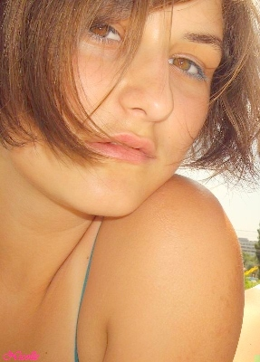

. Saga 'Twilight' Stephanie Meyer
. Saga 'Vampirii Sudului' Charlaine Harris
. Saga 'Anita Blake ' Laurell K. Hamilton
. 'Ps I love you' Cecelia Ahern
. 'Suflete pereche' Cecelia Ahern
. 'Disparuti fara urma' Cecelia Ahern
. 'Greselile Mirandai' Jill Mansell
. "Nu ma simt în stare sa zbor, m-am nascut fara parasuta"
. " Daca viata nu-ti zâmbeste, gâdil-o!"
. ,, Iata ce simt: ca sunt ridicat din mine si izbit de colturi dureroase, si lasat iar în suflet, si iara înaltat. Si nu stiu nimic altceva, si nimic nu înteleg.[...]Trebuie sa ma cunosc. Trebuie sa stiu odata sigur cine sunt si ce vreau. Am amânat mereu lucrul acesta, pentru ca mi-era teama. Mi-era teama ca nu voi izbuti sa-mi luminez sufletul sau ca lumina ce va aluneca asupra-i sa nu ma îndurereze. Eu mi-am închipuit anumite lucruri despre mine însumi. Ce se va întâmpla daca acestea nu exista aievea? Daca ele n-au fost decât o parere?"
. "Tu stii totul despre ce-i cu aceasta viata,mie insa mi s-a-nchis usa in fata.Dar sunt mester la inventat povesti,mai mester decat ai sa izbutesti sa fii tu vreodata,pt ca desi ai bani puhoi,eu am norocul sa gasesc flori in gunoi.Si stiu sa descopar ceea ce nu e si ma pricep la asta mai bine ca tine.Si atunci da-le incolo de socoteli si de cifre.Stii sa spui cata dragoste ai in tine?Un kil?Un litru?Nu stii,nu?Si atunci da-o naibii de matematica.Inventeaza ceea ce nu exista.Pentru ca ceea ce exista apartine tuturor.Dar, daca reusesti sa gasesti ceea ce nu exista atunci ai ceva numai al tau, si, daca cineva vede ceea ce vezi tu, atunci ai gasit pe cineva care traieste ceea ce traiesti si tu. Nu-l lasa sa plece. Opreste-l! Traieste povestea! Povesteste!Povestile sunt ca oamenii.Nu sunt facute sa traiasca singure.Într-un colt al lumii este cineva care traieste o poveste ce se oglindeste într-a ta.Uita-te în jur!Acel cineva nu e asa departe!Cauta-l!Restul îl veti afla împreuna.Pentru ca nu e nimic mai reusit ca doua povesti ce se împletesc."